By asking the writer questions,  helps with the most important process of writing any literary peice: inspiration. This step is often the hardest one to take. This is why we invented . We understood that there were websites out there that simply listed prompts. While this can be useful, it rarely sparks genuine inspiration. This is why asks you, the writer, questions. Our goal is to help you self-inspire and meet your full potential with your writing through genuine inspiration.